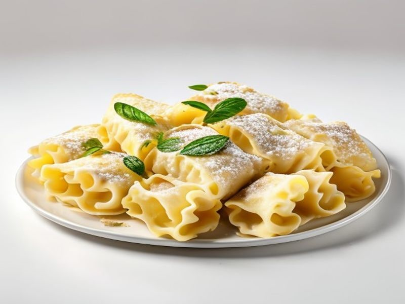

Dania z makaronu
Cannelloni z ricottą
Cannelloni z ricottą: 8 g białka, 155 kcal, 16 g węglowodanów i 7 g tłuszczu na 100 g. Kategoria: Dania z makaronu.
Kalorie155 kcalna 100 g
Białko / proteiny8 g
Węglowodany16 g
Tłuszcz7 g
Cena (szac.)~1,75 złza 100 g
Ceny zaktualizowano: maj 2026 (szacunek — ceny w popularnych supermarketach)
Porcja: porcja (280g)
| Kalorie | 434 kcal |
|---|---|
| Białko | 22.4 g |
| Węglowodany | 44.8 g |
| Tłuszcz | 19.6 g |
| Cena (szac.) | ~4,89 zł |
Szczegółowe składniki odżywcze na 100 g
| Wartość energetyczna (kalorie) | 155 kcal |
|---|---|
| Białko (proteiny) | 8 g |
| Węglowodany | 16 g |
| Tłuszcz | 7 g |
| Tłuszcze nasycone | 3.5 g |
| Tłuszcze nienasycone | 3.5 g |
| Witaminy i minerały | Wapń, Tiamina (B1), Żelazo |
| Współczynnik kcal / 1 g białka | 19.4 |
| Cena produktu (szac. za 100 g) | ~1,75 zł |
| Cena za 100 g białka (szac.) | ~21,83 zł |